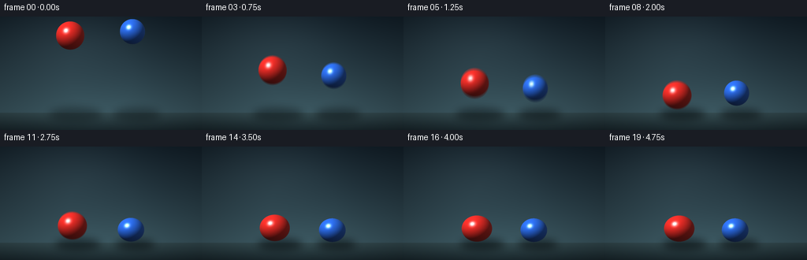
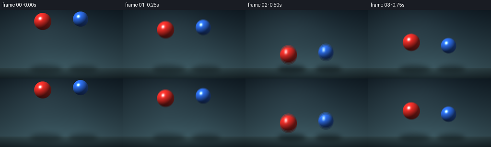
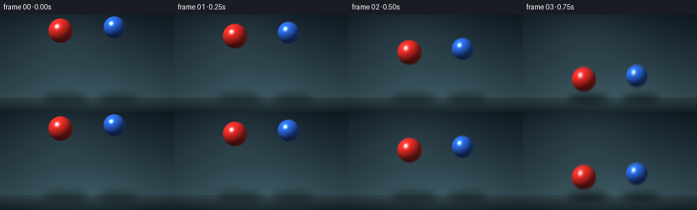
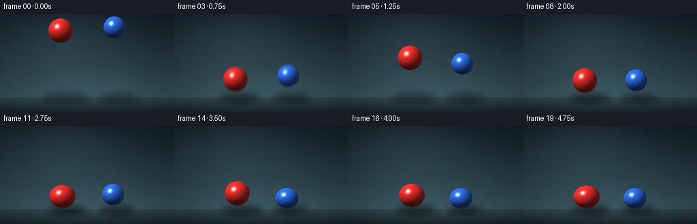

CODING AGENTS AS PIXEL WORLD MODELS
traex/DeepSeek-V4.1-Flash · instance_preservation_0024
点击播放 · 原生 RGB 像素
逐轮保存的候选
回放视频、检查图与代码变化。
每份候选均可单独播放。实际图片检查记录在下方工具轨迹中。
候选 01播放与检查图
点击播放 · 原生 RGB 像素


展开代码变化
--- 上一保存版本
+++ 本次保存版本
@@ -0,0 +1,205 @@
+from pathlib import Path
+import math
+
+import numpy as np
+from PIL import Image, ImageDraw, ImageFilter
+
+import artifact_io
+
+
+WIDTH = 256
+HEIGHT = 144
+FPS = 4.0
+FRAME_COUNT = 20
+SCALE = 4
+W = WIDTH * SCALE
+H = HEIGHT * SCALE
+FLOOR_Y = 122.0
+GRAVITY = 560.0
+
+
+def lerp(a, b, t):
+ return a + (b - a) * t
+
+
+def make_background():
+ y = np.linspace(0.0, 1.0, H, dtype=np.float32)[:, None]
+ x = np.linspace(-1.0, 1.0, W, dtype=np.float32)[None, :]
+
+ wall_top = np.array([17, 29, 38], dtype=np.float32)
+ wall_horizon = np.array([54, 79, 88], dtype=np.float32)
+ floor_horizon = np.array([47, 67, 72], dtype=np.float32)
+ floor_near = np.array([22, 34, 39], dtype=np.float32)
+
+ wall_t = np.clip(y / (FLOOR_Y * SCALE / H), 0.0, 1.0)
+ wall = wall_top[None, None, :] + (wall_horizon - wall_top)[None, None, :] * wall_t[:, :, None]
+ wall = np.broadcast_to(wall, (H, W, 3)).copy()
+ floor_t = np.clip((y - FLOOR_Y * SCALE / H) / (1.0 - FLOOR_Y * SCALE / H), 0.0, 1.0)
+ floor = floor_horizon[None, None, :] + (floor_near - floor_horizon)[None, None, :] * floor_t[:, :, None]
+ floor = np.broadcast_to(floor, (H, W, 3)).copy()
+ image = np.where((y > FLOOR_Y * SCALE / H)[:, :, None], floor, wall)
+
+ # A soft key-light wash on the wall and a pool of reflected light on the floor.
+ wall_glow = np.exp(-((x + 0.34) ** 2 / 0.55 + (y - 0.18) ** 2 / 0.18))
+ floor_glow = np.exp(-((x + 0.05) ** 2 / 0.75 + (y - 0.86) ** 2 / 0.08))
+ image += wall_glow[:, :, None] * np.array([13.0, 16.0, 16.0])
+ image += floor_glow[:, :, None] * np.array([5.0, 8.0, 8.0])
+
+ # A restrained vignette keeps attention on the two balls.
+ radial = np.sqrt((x * 0.88) ** 2 + ((y - 0.53) * 0.92) ** 2)
+ image *= (1.0 - 0.22 * np.clip(radial - 0.28, 0.0, 1.0))[:, :, None]
+ return np.clip(image, 0, 255).astype(np.uint8)
+
+
+def trajectory(time_s, y0, radius, restitution):
+ floor_center = FLOOR_Y - radius
+ fall = floor_center - y0
+ first_hit = math.sqrt(max(0.0, 2.0 * fall / GRAVITY))
+ if time_s <= first_hit:
+ y = y0 + 0.5 * GRAVITY * time_s * time_s
+ return y, 0, False
+
+ remaining = time_s - first_hit
+ speed = GRAVITY * first_hit
+ bounce_index = 0
+ while True:
+ speed *= restitution
+ bounce_index += 1
+ airborne = 2.0 * speed / GRAVITY
+ if remaining <= airborne:
+ y = floor_center - speed * remaining + 0.5 * GRAVITY * remaining * remaining
+ return y, bounce_index, False
+ remaining -= airborne
+ if speed < 7.0:
+ return floor_center, bounce_index, True
+
+
+def sphere_layer(cx, cy, radius, base_rgb, fill_rgb, squash):
+ rx = radius * (1.0 + squash)
+ ry = radius * (1.0 - squash)
+ x0 = max(0, int(math.floor(cx - rx - 2)))
+ x1 = min(W, int(math.ceil(cx + rx + 2)))
+ y0 = max(0, int(math.floor(cy - ry - 2)))
+ y1 = min(H, int(math.ceil(cy + ry + 2)))
+ if x0 >= x1 or y0 >= y1:
+ return None
+
+ yy, xx = np.mgrid[y0:y1, x0:x1].astype(np.float32)
+ dx = (xx - cx) / rx
+ dy = (yy - cy) / ry
+ rr = dx * dx + dy * dy
+ inside = rr <= 1.0
+ nz = np.sqrt(np.clip(1.0 - rr, 0.0, 1.0))
+
+ normal = np.stack((dx, dy, nz), axis=-1)
+ light = np.array([-0.54, -0.63, 0.56], dtype=np.float32)
+ light /= np.linalg.norm(light)
+ half = light + np.array([0.0, 0.0, 1.0], dtype=np.float32)
+ half /= np.linalg.norm(half)
+
+ diffuse = np.clip(np.sum(normal * light, axis=-1), 0.0, 1.0)
+ specular = np.power(np.clip(np.sum(normal * half, axis=-1), 0.0, 1.0), 58.0)
+ fill = np.clip(np.sum(normal * np.array([0.42, -0.10, 0.90], dtype=np.float32), axis=-1), 0.0, 1.0)
+ rim = np.power(1.0 - nz, 2.1)
+
+ base = np.array(base_rgb, dtype=np.float32)
+ fill_color = np.array(fill_rgb, dtype=np.float32)
+ shade = 0.22 + 0.83 * diffuse + 0.12 * fill
+ rgb = base[None, None, :] * shade[:, :, None]
+ rgb += fill_color[None, None, :] * (0.10 * fill)[:, :, None]
+ rgb += np.array([92.0, 105.0, 108.0])[None, None, :] * (0.18 * rim)[:, :, None]
+ rgb += specular[:, :, None] * np.array([225.0, 236.0, 244.0])[None, None, :]
+
+ # A second, broader highlight gives the balls a polished but not plastic look.
+ broad = np.exp(-(((dx + 0.30) / 0.18) ** 2 + ((dy + 0.39) / 0.15) ** 2))
+ rgb += broad[:, :, None] * np.array([20.0, 23.0, 24.0])[None, None, :]
+
+ # Slight darkening at the lower edge reads as contact with the room.
+ rgb *= (1.0 - 0.18 * np.clip(dy, 0.0, 1.0))[:, :, None]
+ rgb = np.clip(rgb, 0, 255).astype(np.uint8)
+
+ alpha = np.where(inside, 255, 0).astype(np.uint8)
+ return x0, y0, rgb, alpha
+
+
+def draw_shadow(image, cx, cy, radius):
+ height = max(0.0, FLOOR_Y - radius - cy)
+ near = math.exp(-height / 26.0)
+ width = radius * (1.55 + 0.32 * (1.0 - near))
+ shadow_h = radius * (0.34 + 0.10 * (1.0 - near))
+ opacity = int(92 + 64 * near)
+
+ layer = Image.new("RGBA", (W, H), (0, 0, 0, 0))
+ draw = ImageDraw.Draw(layer)
+ left = (cx - width) * 1.0
+ right = (cx + width) * 1.0
+ top = (FLOOR_Y - shadow_h + 1.5) * SCALE
+ bottom = (FLOOR_Y + shadow_h * 1.10 + 2.0) * SCALE
+ draw.ellipse((left * SCALE, top, right * SCALE, bottom), fill=(4, 10, 13, opacity))
+ layer = layer.filter(ImageFilter.GaussianBlur(radius=5.0 * SCALE))
+ return Image.alpha_composite(image.convert("RGBA"), layer)
+
+
+def composite_sphere(image, cx, cy, radius, base_rgb, fill_rgb, squash):
+ result = sphere_layer(cx * SCALE, cy * SCALE, radius * SCALE, base_rgb, fill_rgb, squash)
+ if result is None:
+ return image
+ x0, y0, rgb, alpha = result
+ sprite = Image.fromarray(np.dstack((rgb, alpha)), mode="RGBA")
+ image.alpha_composite(sprite, dest=(x0, y0))
+ return image
+
+
+def render_sample(time_s, background):
+ image = Image.fromarray(background, mode="RGB").convert("RGBA")
+
+ red_x = 89.0 + 1.0 * time_s
+ blue_x = 168.0 - 0.7 * time_s
+ red_radius = 18.0
+ blue_radius = 16.0
+ red_y, red_bounce, _ = trajectory(time_s, 24.0, red_radius, 0.76)
+ blue_y, blue_bounce, _ = trajectory(time_s, 19.0, blue_radius, 0.69)
+
+ # Shadows sit on the floor plane; the farther ball has a softer, smaller shadow.
+ image = draw_shadow(image, red_x + 7.0, red_y, red_radius)
+ image = draw_shadow(image, blue_x + 5.5, blue_y, blue_radius)
+
+ red_contact = max(0.0, 1.0 - (FLOOR_Y - red_radius - red_y) / 6.0)
+ blue_contact = max(0.0, 1.0 - (FLOOR_Y - blue_radius - blue_y) / 6.0)
+ red_squash = 0.075 * red_contact if red_bounce > 0 else 0.0
+ blue_squash = 0.060 * blue_contact if blue_bounce > 0 else 0.0
+
+ image = composite_sphere(
+ image, red_x, red_y, red_radius,
+ base_rgb=(238, 44, 38), fill_rgb=(76, 34, 30), squash=red_squash,
+ )
+ image = composite_sphere(
+ image, blue_x, blue_y, blue_radius,
+ base_rgb=(43, 107, 232), fill_rgb=(34, 61, 105), squash=blue_squash,
+ )
+ return np.asarray(image.convert("RGB"), dtype=np.float32)
+
+
+def main():
+ background = make_background()
+ frames = []
+ for index in range(FRAME_COUNT):
+ time_s = index / FPS
+ # A short virtual shutter removes the stepped look at 4 fps.
+ shutter = 0.010
+ accum = np.zeros((H, W, 3), dtype=np.float32)
+ for offset in (-shutter, 0.0, shutter):
+ accum += render_sample(max(0.0, time_s + offset), background)
+ frame = np.clip(accum / 3.0 + 0.5, 0, 255).astype(np.uint8)
+ frame = np.asarray(
+ Image.fromarray(frame).resize((WIDTH, HEIGHT), Image.Resampling.LANCZOS),
+ dtype=np.uint8,
+ )
+ frames.append(frame)
+
+ frames = np.stack(frames, axis=0)
+ artifact_io.save(frames, Path(__file__).resolve().parent)
+
+
+if __name__ == "__main__":
+ main()
候选 02播放与检查图
点击播放 · 原生 RGB 像素


展开代码变化
--- 上一保存版本
+++ 本次保存版本
@@ -15,7 +15,7 @@
W = WIDTH * SCALE
H = HEIGHT * SCALE
FLOOR_Y = 122.0
-GRAVITY = 560.0
+GRAVITY = 255.0
def lerp(a, b, t):
@@ -151,14 +151,14 @@
def render_sample(time_s, background):
- image = Image.fromarray(background, mode="RGB").convert("RGBA")
+ image = Image.fromarray(background).convert("RGBA")
red_x = 89.0 + 1.0 * time_s
blue_x = 168.0 - 0.7 * time_s
red_radius = 18.0
blue_radius = 16.0
- red_y, red_bounce, _ = trajectory(time_s, 24.0, red_radius, 0.76)
- blue_y, blue_bounce, _ = trajectory(time_s, 19.0, blue_radius, 0.69)
+ red_y, red_bounce, _ = trajectory(time_s, 24.0, red_radius, 0.72)
+ blue_y, blue_bounce, _ = trajectory(time_s, 19.0, blue_radius, 0.63)
# Shadows sit on the floor plane; the farther ball has a softer, smaller shadow.
image = draw_shadow(image, red_x + 7.0, red_y, red_radius)
可观测工具轨迹
实际执行的命令与返回图片。
命令 1exit 0
/bin/bash -c "pwd && rg --files -g 'prompt.txt' -g 'GENERATION_RULES.md' -g 'task_spec.json' -g '"'!*.mp4'"' -g '"'!*.png'"' -g '"'!*.jpg'"'"
命令 2exit 0
/bin/bash -c 'ls -la'
命令 3exit 0
/bin/bash -c 'cat prompt.txt'
命令 4exit 0
/bin/bash -c 'cat GENERATION_RULES.md'
命令 5exit 0
/bin/bash -c 'cat task_spec.json'
命令 6exit 0
/bin/bash -c "sed -n '1,240p' artifact_io.py"
命令 7exit 0
/bin/bash -c 'python generate.py'
命令 8exit 0
/bin/bash -c 'python generate.py'
命令 9exit 0
/bin/bash -c "python - <<'PY'
import math
G=255.; floor=122.; r0=18.; r1=16.
for name,y0,r,e in [('red',24,18,.72),('blue',19,16,.63)]:
fc=floor-r
t=math.sqrt(2*(fc-y0)/G)
print(name,'hit',t)
v=G*t
for i in range(6):
v*=e
t2=2*v/G
print(' bounce',i+1,'peak',floor-r-v*v/(2*G),'dur',t2)
PY"命令 10exit 0
/bin/bash -c "find . -maxdepth 2 -type f -printf '%p %s bytes\\n' | sort"
命令 11exit 0
/bin/bash -c 'command -v ffmpeg || true'
命令 12exit 0
/bin/bash -c "python - <<'PY'
from pathlib import Path
import numpy as np
from PIL import Image
p=Path('pixels.npz')
z=np.load(p)
print('keys',z.files,'shape',z['pixels'].shape,'dtype',z['pixels'].dtype)
frames=sorted(Path('frames').glob('*.png'))
print('png frames',len(frames),'first',frames[0].name,'last',frames[-1].name)
print('sizes', {Image.open(f).size for f in frames})
a=np.stack([np.asarray(Image.open(f)) for f in frames])
print('mean rgb',a.mean(axis=(0,1,2)).round(2),'range',int(a.min()),int(a.max()))
print('adjacent mean abs diff',np.abs(a[1:].astype(int)-a[:-1].astype(int)).mean(axis=(1,2,3)).round(2))
print('html bytes',Path('index.html').stat().st_size)
PY"命令 13exit 0
/bin/bash -c "python - <<'PY'
from PIL import Image
import numpy as np
from pathlib import Path
frames=[np.asarray(Image.open(f'frames/{i:02d}.png')) for i in range(20)]
# Red/blue pixel centroids by color dominance, a useful continuity check.
for i,a in enumerate(frames):
r,g,b=a[:,:,0].astype(int),a[:,:,1].astype(int),a[:,:,2].astype(int)
red=(r>g*1.8)&(r>b*1.6)&(r>90)
blue=(b>r*1.4)&(b>g*1.12)&(b>100)
vals=[]
for m in (red,blue):
yy,xx=np.nonzero(m)
vals.append(f'{xx.mean():.1f},{yy.mean():.1f}' if len(xx) else 'none')
print(f'{i:02d}: red={vals[0]} blue={vals[1]}')
PY"命令 14exit 0
/bin/bash -c 'git status --short 2>/dev/null || true'
视觉工具实际返回图片 1

视觉工具实际返回图片 2

保存候选 2 份；完成命令 14 次；可验证图片返回 2 张。原始 API 响应与完整日志保留在本地。